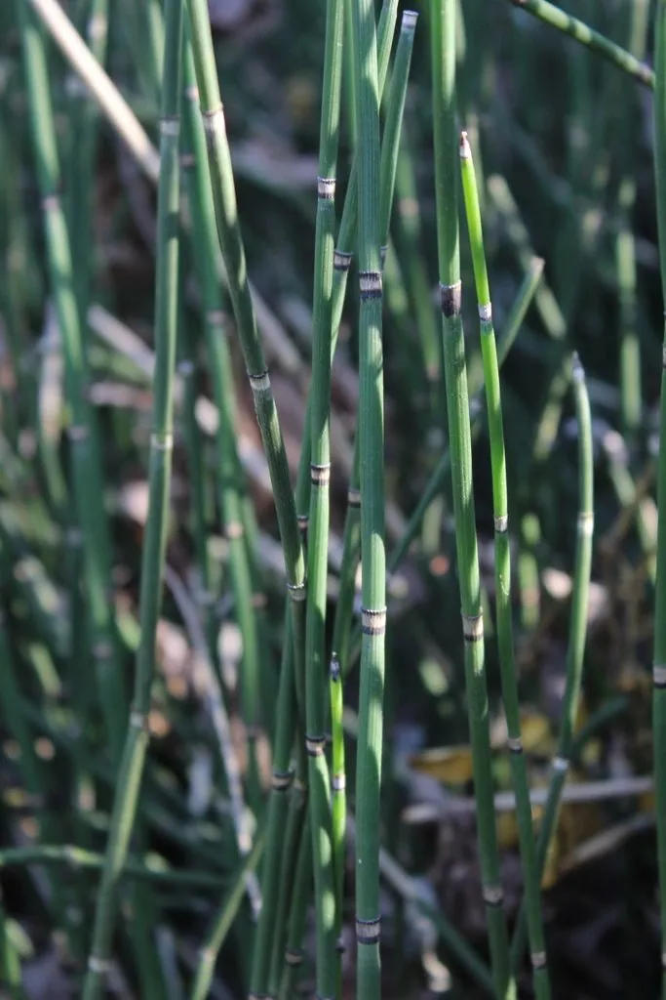

蕨类与裸子植物 · 植物界
木贼 Equisetum hyemale

木贼的茎一节一节中空如笔管，表面富含硅质，古人用它打磨木器，也是常见的药用蕨类与湿地植物。
- 分类
- 门蕨类植物门纲木贼纲目木贼目科木贼科属木贼属
- 栖息环境
- 溪边、沟渠、湿地与林下阴湿处，喜湿润半阴
- 地理分布
- 北半球温带广泛分布，中国各地常见
- 保护级别
- 暂无评估；常见湿地蕨类
物种志
木贼是木贼科的多年生蕨类，株高 30–100 cm，茎直立、单一，不分枝，圆柱形，中空有节，节间表面有纵向的棱脊，粗糙富硅质。茎表面深绿色，节处有黑褐色的鞘状叶，鞘齿脱落。孢子囊穗顶生，长圆形或椭圆形，成熟时褐色，孢子叶盾状，孢子同型。
木贼喜湿润、半阴的环境，常生于溪边、沟渠、湿地与林下阴湿处，靠根状茎蔓延，有时形成小片群落。它的茎表面富含硅质，粗糙如砂纸，古人曾用来打磨木器、金属和象牙，也用于制作工艺品。全草入药，有疏风散热、明目退翳之效，可用于目赤肿痛等症，但全草有毒，需在医生指导下使用。木贼在北半球温带广泛分布，中国各地常见。
形态与习性
- 株高30–100 cm
- 茎直立不分枝，中空有节
- 表面富含硅质，粗糙如砂纸
- 孢子囊穗顶生，长圆形
- 药用全草疏风散热、明目退翳
- 毒性全草有毒，需慎用
趣味知识
- 木贼的茎一节节中空，像一根根绿色的笔管。
- 茎表面富含硅质，古人用来打磨木器、金属和象牙。
- 木贼在中药里能明目退翳，但全草有毒，不能自行乱用。